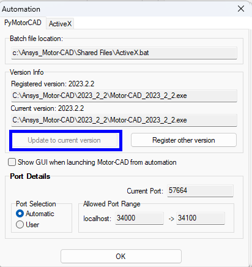
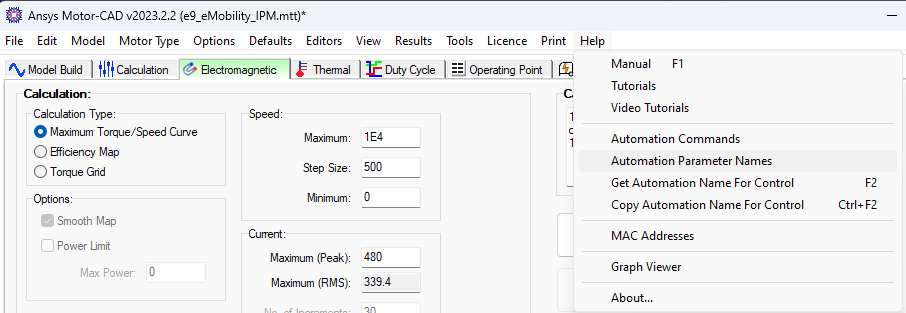
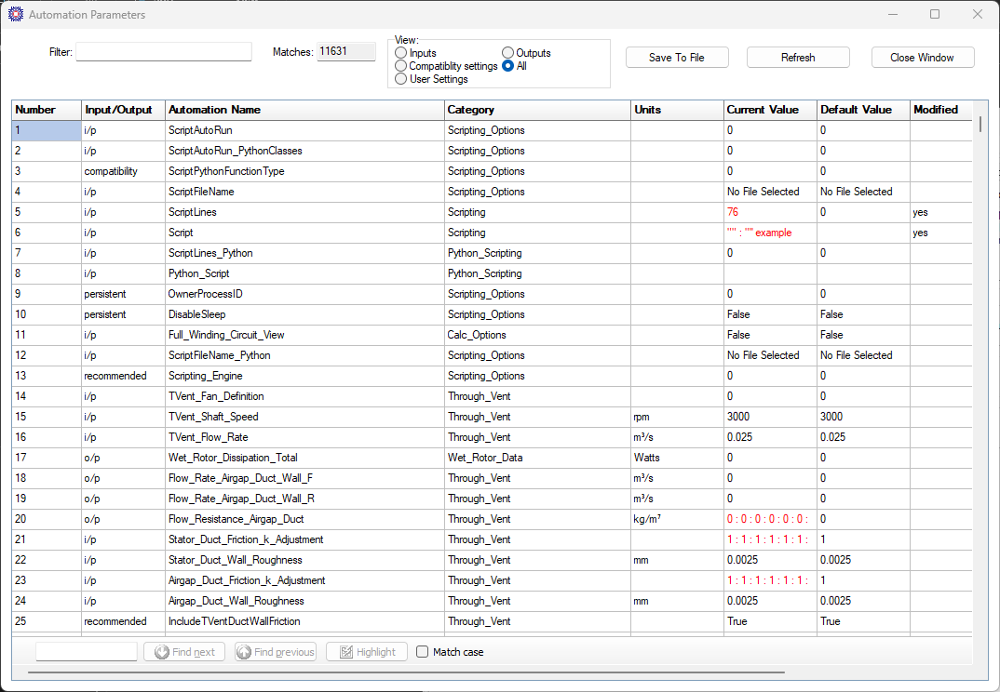
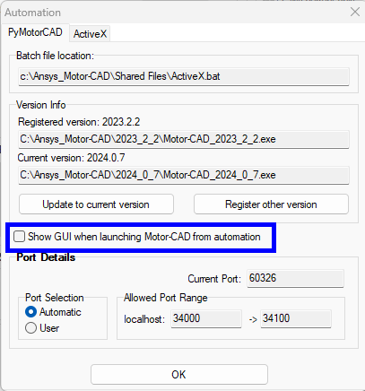
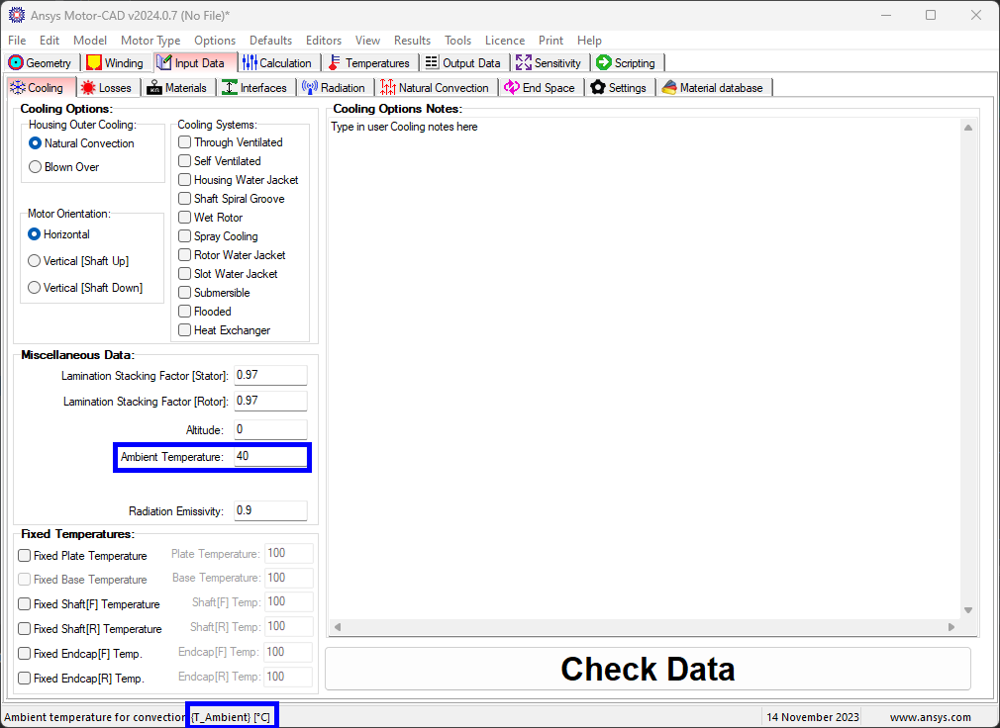
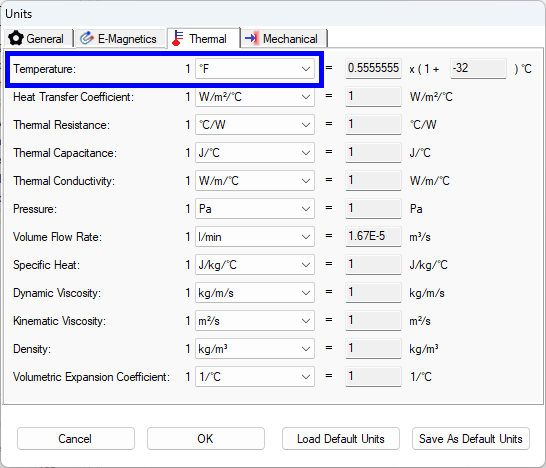

Motor-CAD setup#
This section covers PyMotor-CAD options which are accessed from the Motor-CAD UI.
Registering Motor-CAD for automation#
Before you can run any scripts to interact with Motor-CAD, you must first verify the current version of Motor-CAD is registered for automation.
To do this, select Defaults -> Automation to open the registration window and click Update to current version. If the current version is already registered, this is greyed out as in the image below. Click OK.
{kind=link}
Note
PyMotorCAD creates and runs from a new instance of Motor-CAD unless otherwise specified in the creation of the Motor-CAD object. If the Motor-CAD object is set to not open a new instance, then it connects with any open Motor-CAD window regardless of version number and without preference for any particular one.
Automation parameter names#
Scripting in Motor-CAD usually involves setting parameters (for example: geometry, operating point definition, cooling, calculation options), running calculations, and then retrieving results (for example: torque, efficiency, losses). To do this, the correct Motor-CAD parameter name must be known.
A list of all Motor-CAD parameters available via automation can be found under Help -> automation Parameter Names.
 {kind=link}
{kind=link}
Note
The list can be filtered to find the required parameter. Typically, the automation parameter names are the same as
the displayed name in the Motor-CAD interface, with spaces replaced by underscores for example: for Pole Number the
automation name is Pole_Number.
For most parameters, the automation name can also be found by hovering the mouse over the input control or the parameter row in the output data sheet. The status bar shows a description of the parameter, followed by its automation name in curly brackets.
For example, here the mouse is hovered over the magnetization radio group in the calculation tab,
showing that the parameter name is Magnetization.

You can also press F2 with the control in focus and the automation parameter list is shown with
the correct parameter name automatically entered in the search box.
Ctrl + F2 copies the automation name of the control which is currently selected.
Note
If a parameter cannot be found in this way, an alternative method is to set the parameter to a distinctive value through the user interface, for example: 1234. You can then find the parameter by filtering the Automation Parameters list by this value.
GUI in automation#
If Motor-CAD is launched by an external script then by default the GUI is not shown. This improves the speed of startup and decrease the memory usage while scripting. If the GUI is required during scripting, for example for troubleshooting or to script UI commands (for example: taking screenshots from Motor-CAD), this option can be enabled. This setting applies to all instances of this Motor-CAD version.
{kind=link}
Regardless of this option, during a script the Motor-CAD GUI can be shown or hidden at any time using the
command set_visible().
Some scripting commands require the GUI to be shown, for example display_screen(), save_screen_to_file()
When changing model parameters via automation with the GUI visible, Motor-CAD does not update the user interface
with the new parameter value at every step, to speed up the scripting. However, this means that you should
never change a parameter which is shown on the currently displayed tab. It is best practice to run all scripts with
the Scripting tab visible. This should be set before changing any parameters with the command
mcApp.display_screen("scripting")
This needS to be called after loading any files or setting context, before any calls to set_variable().
Units#
In Motor-CAD, the units can be changed under Defaults -> Units, this displays values in the interface in the selected units.
However, variables are not be converted for use in automation and so values are always given in the Motor-CAD default units. This applies both when setting input variables and retrieving output results. To see what these default values are, navigate to Help -> Automation Parameter Names (or press F2) where the parameters are displayed with their default units.
As an example, go the thermal context and navigate to Input Data -> Cooling
{kind=link}
Change the default temperature units in the interface to Fahrenheit:
{kind=link}
Search for T_ambient in the Automation Parameters list and change the value to 100:
{kind=link}
It can be seen that the current value is given in the units specified in the automation parameters list and not the default units selected in the GUI. The displayed interface value is in ℉ and the set value in the list is in ℃.